Research / spatial-reasoning
WildDet3D:一个通用的开集3D检测数据集及架构
WildDet3D论文分享
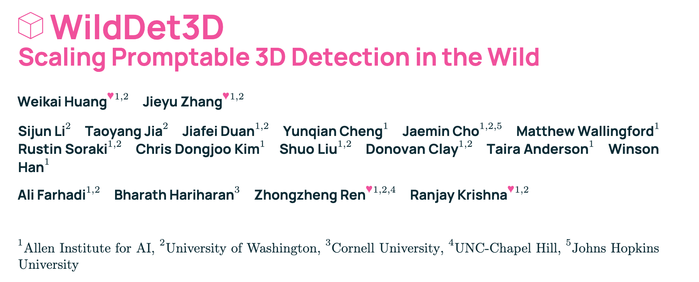
代码链接：https://github.com/allenai/WildDet3D
论文链接：https://arxiv.org/pdf/2604.08626
项目链接：https://allenai.github.io/WildDet3D/
简介
从单个图像中理解 3D 对象是空间智能的基石，实现这一点的一个重要方法是单目3d目标检测（monocular 3D object detection）。为了让方法能够应用到现实世界，目标检测器需要满足以下条件：1）能够泛化到数据集之外的物体类别； 2）能够支持多模态的 prompt 输入（文本，2d points，2d boxes）；3）能够利用几何线索（如 sparse LiDAR or partial depth）。
然而，现有工作存在一定的局限性：
- 在方法上，通常只支持单一模态的 prompt，并且不支持额外几何线索的输入（输入通常只有 RGB 图像）
- 在数据集上，通常只涵盖了固定场景中的部分类别
WildDet3D针对这些问题做了改进，首先是收集了一个open 3D detection dataset ，该数据集数据量大并且包含现实生活中的多类场景；此外， WildDet3D 还提出了一个能够支持多模态 prompt 和几何线索输入的方法。
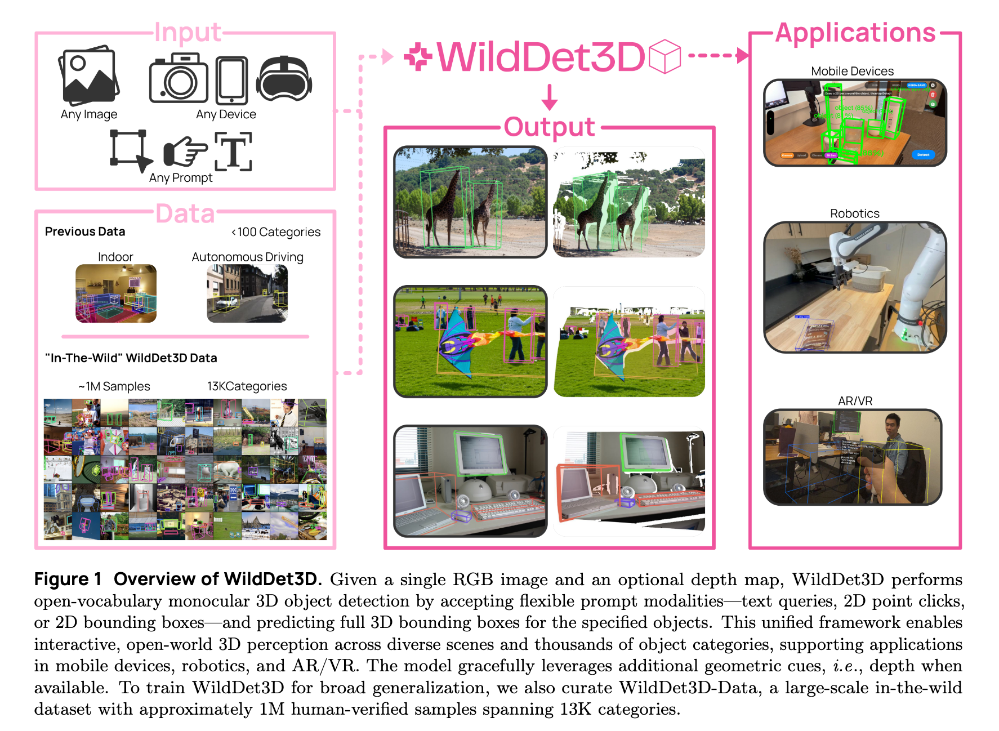
方法
WildDet3D
模型输入：RGB图像，shape 为 [3, H, W]；可选输入的相机参数，shape为 [3, 3] ；可选输入深度图dpeth map，shape 为 [H, W]；一个给定模态的 prompt，包括文本, 2d points（一个坐标点（u, v)）, 一个box（（x1，y1，x2，y2）） 。
模型输出：每个目标物体的 3D bounding boxes B, 每个 B 为 [c, d, R, s]。其中 c 是 3d 物体中心的坐标点(x,y,z)；d是物体的大小 [w, h, l]，分表表示宽高长；R是物体的方向；s是这个 box 的置信度。
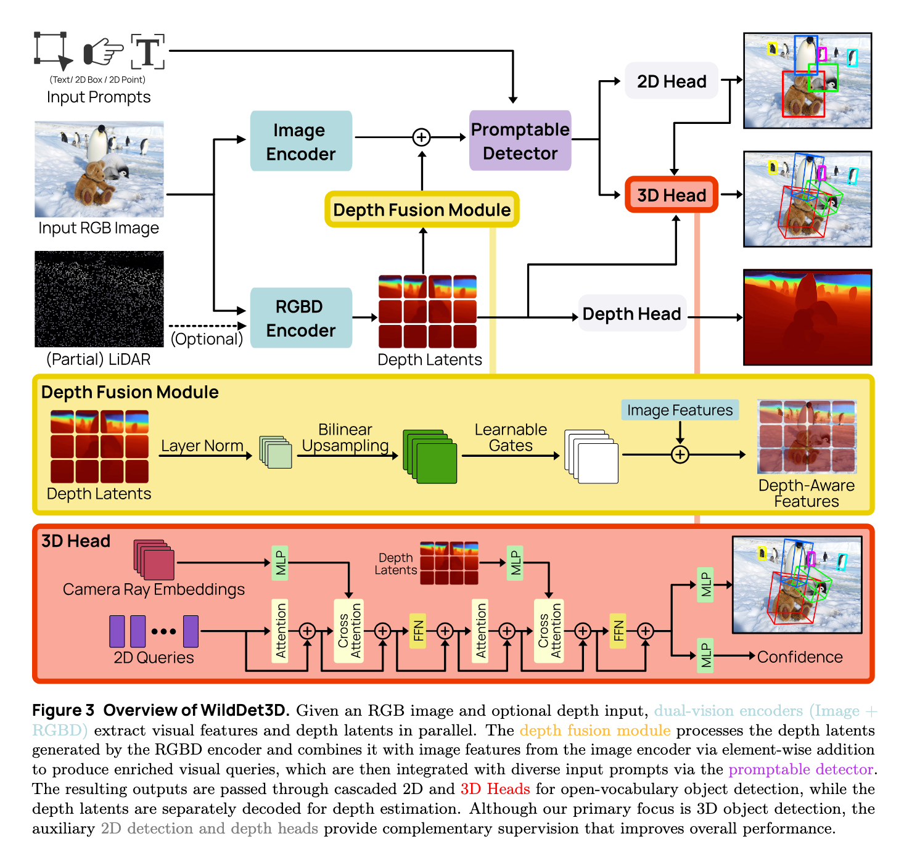
dual-vision encoders & depth fusion module
该模块的作用是支持额外的几何信息输入（depth map）。
dual-vision encoders
WildDet3D 用两个不同的 encoder 去处理 RGB 和可选的 Depth 输入，论文提到这里用 dual-encoders 的理由是为了解耦，防止两个模态的输入互相干扰。
Image-Encoder 用的是一个预训练好的带有SimpleFPN neck 的 ViT-H（架构和权重来自SAM 3），共有 32 个 ViT 块。在训练时，前28个block被冻结，只 Fine-tune 后 4 个 block。
RGBD encoder 用的是预训练好的 DINOv2 ViT-L/14（架构和权重来自 LingBot-Depth） ，其输入为 [4, H, W] 的 RGB + depth 模态，当无 depth 时，则默认一维通道为全0。该 Encoder 中共有 23 个 DINOv2 blocks，在训练时，前 21 个 block 冻结，只 Fine-tune 后 3 个 block。此外，为了让模型能够自适应是否有 depth 输入，模型在训练时：To support optional depth input, training uses a stochastic strategy: 70% monocular (zero depth), 20% patch-masked depth, and 10% full depth copy-through.
depth fusion module
假设 Image-Encoder 的输出是 V，RGBD Encoder 的输出是 Z_d，两个模态的特征融合方式如下：
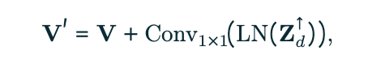
其中 Z 做了上采样操作，以使得 V 和 Z 的 shape 匹配。同时，为了防止训练早期，Z 干扰主模态 V，Conv 使用 zero-initialized。
promptable detector
该模块的作用是支持多种模态的 prompt 输入。
WildDet3D 支持下面4种模态的 prompt：
• Text prompt. A category name (e.g., “car”), selecting all instances of that category.
• Point prompt. One or more 2D pixel coordinates (u, v), each labeled as positive (on the object) or negative (background), selecting the single object at that location [9, 13, 62].
• Box prompt. A 2D bounding box (x1, y1, x2, y2), selecting the single object within the specified region. • Exemplar prompt. A 2D bounding box used as a visual exemplar, detecting all visually similar objects in the scene.
During training, all four prompt types are sampled jointly to ensure balanced learning across modalities.
<font style="color:rgb(0, 0, 0);">WildDet3D 对 prompt 进行两类编码：text prompt 使用 CLIP-style text encoder；2D point、2D box 和 exemplar prompt 使用共享的 geometry encoder。编码后的 text token 和 geometry token 会拼接成统一 prompt sequence，并通过 cross-attention 参与检测。</font>
<font style="color:rgb(0, 0, 0);">在训练 batch 组织上，WildDet3D 不按照 image 组织，而采用 per-prompt batching。即一个 batch entry 对应一个具体 prompt（例如 text 类别 "dog"，或者一个具体 box/point prompt），并聚合所有对应的训练样本。对于 text prompt，同一类别的图片会被聚合到一起；对于 point/box prompt，则每个目标实例作为 prompt 单元进行训练。</font>
3D detection head
该模块的作用是实现 3d bounding box prediction，其主要做的是将 2D query features 变成 3d box prediction。
在架构上，就是很经典的 transformer 架构；在训练时，<font style="color:rgb(0, 0, 0);">每个 decoder layer 都进行 3D box 预测并计算 loss，使中间层也具备 3D localization 能力，加速收敛并提升鲁棒性。</font>
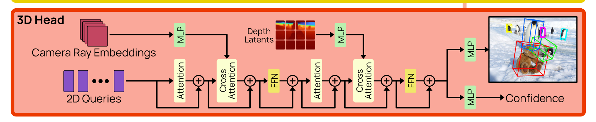
<font style="color:rgb(0, 0, 0);">Multi-task learning</font>
<font style="color:rgb(0, 0, 0);">在训练过程中，WildDet3D 同时优化 </font><font style="color:rgb(0, 0, 0);">3D detection、2D detection 和 depth estimation</font><font style="color:rgb(0, 0, 0);"> 三个任务，通过共享视觉特征和联合监督提升 3D 检测能力。由于单目 3D 检测同时需要理解目标语义、2D 位置以及三维几何信息，仅依靠 3D box 监督较难学习，因此作者引入 2D 和 depth 任务作为辅助监督。</font>
<font style="color:rgb(0, 0, 0);">其中，</font><font style="color:rgb(0, 0, 0);">2D detection task</font><font style="color:rgb(0, 0, 0);"> </font><font style="color:rgb(0, 0, 0);">提供目标类别和图像空间位置的监督，帮助模型学习更准确的目标定位；</font><font style="color:rgb(0, 0, 0);">depth estimation task</font><font style="color:rgb(0, 0, 0);"> </font><font style="color:rgb(0, 0, 0);">提供像素级深度和相机几何约束，帮助模型理解物体的距离和空间结构。这些辅助任务增强了模型的语义表示和几何建模能力，从而提升最终 3D bounding box 的预测效果。</font>
<font style="color:rgb(0, 0, 0);">此外，作者针对不同 prompt 类型设计了不同的监督方式：text/exemplar prompt 使用 multi-target query，同时监督同类别的多个实例；point/box prompt 使用 single-target geometric query，针对单个目标进行精确定位。同时采用 one-to-many matching，让一个真实目标对应多个预测结果参与训练，以提供更密集的梯度信号，加速模型收敛。（整的真复杂啊</font><font style="color:rgb(0, 0, 0);">🤯</font><font style="color:rgb(0, 0, 0);">）</font>
WildDet3D-dataset
现有的 3d 检测数据集存在一些 limitations：
- 规模有限，通常仅局限于100个类别以内
- 覆盖领域有限，主要局限在室内或者自动驾驶场景
WildDet3D-data 包括 1M images across 22 scene categories with 3.7M valid 3D annotations and 13.5K object categories。数据集的收集 pipeline 如下图：
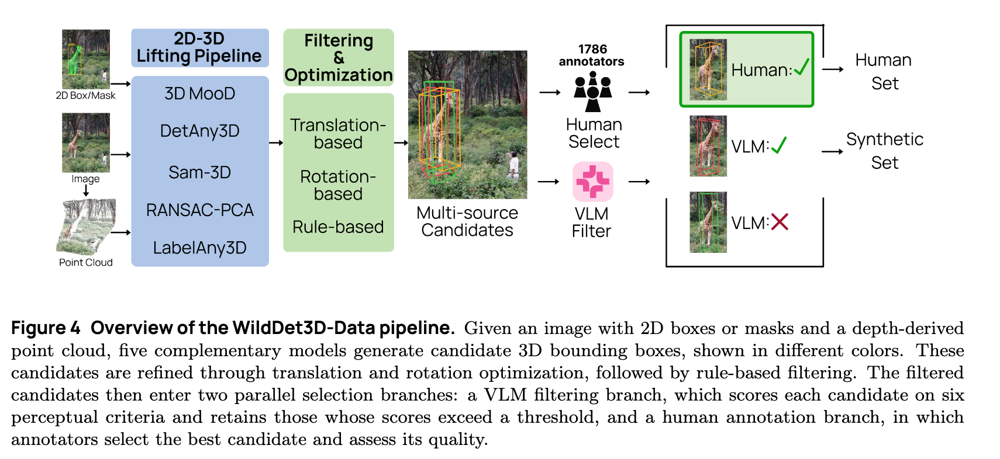
下面两张图是关于这个数据集的一些详细信息：
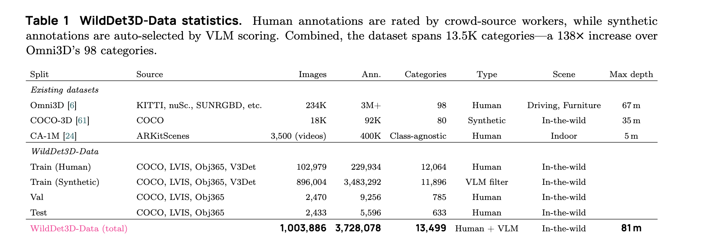
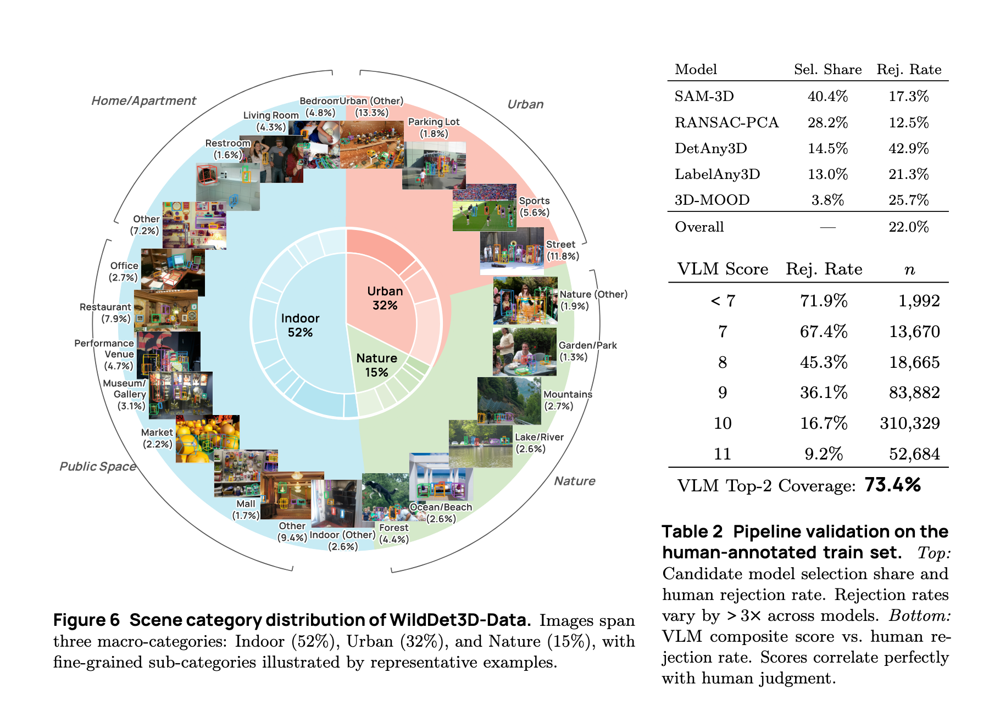
实验
下面的图是一些实验结果：
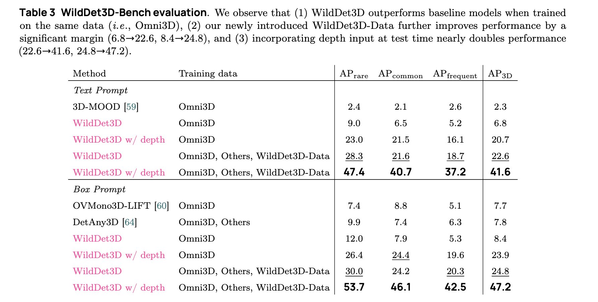
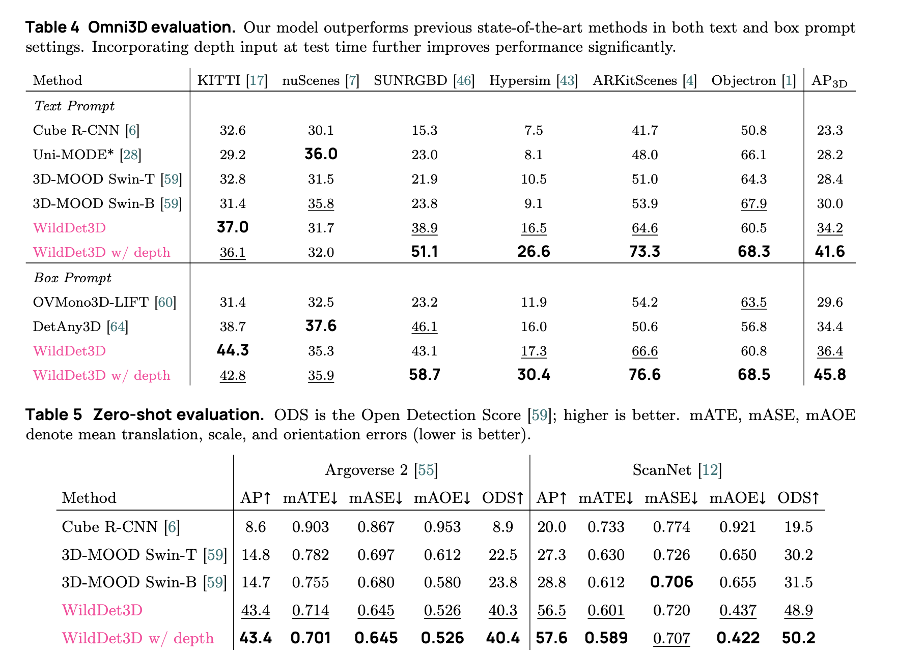
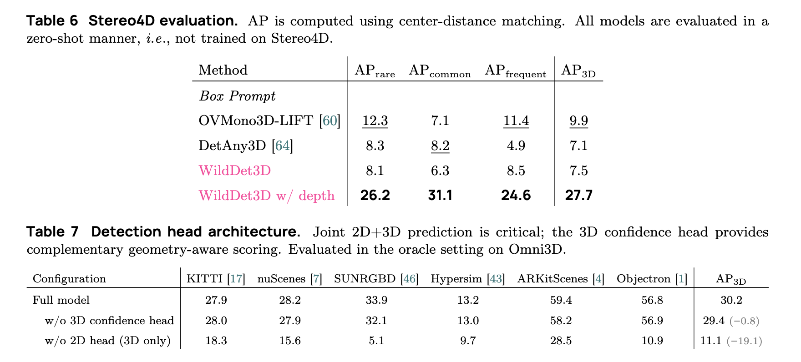
如何 follow
WildDet3D 的主要贡献：
- 提供的数据数据量大，场景更多，但是我们要迁移到街景场景的话，这里就不大适用，场景只有很单一
- 做的是 promptable open- vocabulary 3d detection，这点不知道自动驾驶领域有无对应的工作，还是都是 close-set的(
- )
- 支持 RGB + depth 的输入，不知道自动驾驶领域有无这种情况，比如自动驾驶领域也是只用 RGB 或者只用 depth（<font style="color:rgb(0, 0, 0);">OVM3D-Det只用 RGB 来训练，减少开销，我们可以让其动态支持</font>）
- 支持多种类型的 prompt 输入，不知道自动驾驶领域是支持哪种 prompt，这方面有没有可做的（除了 text，还能有什么模态，对于街景场景）
- 自动驾驶有 muti-view，这点可以考虑在 wilddet3d 上扩展（mutiview最后需要拿到鸟瞰图，有无那么多的数据；如果是muti-view的话，似乎不好搞其他模态的prompt）
- 算法上怎么改进？
+ <font style="color:rgb(0, 0, 0);">OV-SCAN</font> + <font style="color:rgb(0, 0, 0);">OpenAD</font> + <font style="color:rgb(0, 0, 0);">OVM3D-Det， 这里可以follow，主要是其他 open- vocabulary 工作主要是先拿侯选框，再问类别，而这里是根据 prompt 直接拿 3d box，有区别。</font>
一些在街景场景做 open-vocabulary 3d detection 的相关工作
<font style="color:rgb(0, 0, 0);">OV-SCAN: Semantically Consistent Alignment for Novel Object Discovery in Open-Vocabulary 3D Object Detection (ICCV 2025)</font>
_<font style="color:rgb(0, 0, 0);">Open-vocabulary 3D object detection for autonomous driving aims to detect novel objects beyond the predefined training label sets in point cloud scenes. Existing approaches achieve this by connecting traditional 3D object detectors with vision-language models (VLMs) to regress 3D bounding boxes for novel objects and perform open-vocabulary classification through cross-modal alignment between 3D and 2D features. However, achieving robust cross-modal alignment remains a challenge due to semantic inconsistencies when generating corresponding 3D and 2D feature pairs. To overcome this challenge, we present OV-SCAN, an Open-Vocabulary 3D framework that enforces Semantically Consistent Alignment for Novel object discovery. OV-SCAN employs two core strategies: discovering precise 3D annotations and filtering out low-quality or corrupted alignment pairs (arising from 3D annotation, occlusion-induced, or resolution-induced noise). Extensive experiments on the nuScenes dataset demonstrate that OV-SCAN achieves state-of-the-art performance</font>_
这个工作主要做的是不同模态的对齐，提升 2D features 和 3D features的质量，以更好地对齐文本模态，以实现 open- vocabulary 的 3d detection
<font style="color:rgb(0, 0, 0);">Training an Open-Vocabulary Monocular 3D Object Detection Model without 3D Data (NeurIPS 2024)</font>
<font style="color:rgb(0, 0, 0);">Open-vocabulary 3D object detection has recently attracted considerable attention due to its broad applications in autonomous driving and robotics, which aims to effectively recognize novel classes in previously unseen domains. However, existing point cloud-based open-vocabulary 3D detection models are limited by their high deployment costs. In this work, we propose a novel open-vocabulary monocular 3D object detection framework, dubbed OVM3D-Det, which trains detectors using only RGB images, making it both cost-effective and scalable to publicly available data. Unlike traditional methods, OVM3D-Det does not require high-precision LiDAR or 3D sensor data for either input or generating 3D bounding boxes. Instead, it employs open-vocabulary 2D models and pseudo- LiDAR to automatically label 3D objects in RGB images, fostering the learning of open-vocabulary monocular 3D detectors. However, training 3D models with labels directly derived from pseudo-LiDAR is inadequate due to imprecise boxes estimated from noisy point clouds and severely occluded objects. To address these issues, we introduce two innovative designs: adaptive pseudo-LiDAR erosion and bounding box refinement with prior knowledge from large language models. These techniques effectively calibrate the 3D labels and enable RGB-only training for 3D detectors. Extensive experiments demonstrate the superiority of OVM3D-Det over baselines in both indoor and outdoor scenarios. The code will be released.</font>
做的是只基于 RGB 实现 3d object detection
<font style="color:rgb(0, 0, 0);">OpenAD：Open-world Autonomous Driving Benchmark</font>
<font style="color:rgb(0, 0, 0);">Language Prompt for Autonomous Driving (AAAI 2025)</font>
这个工作面向的是时序数据，
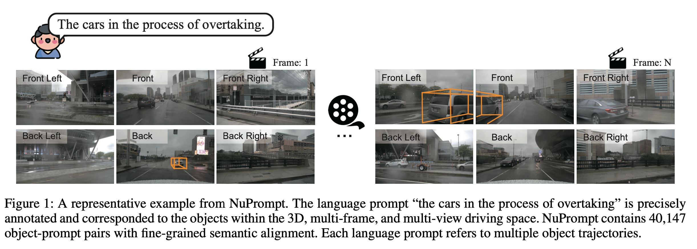
一些需要 ask 的问题
- 数据怎么来，已经有数据，还是基于当前已有的 2d/3d bench 去组织（像wilddet3d这个工作一样）
- 要做的数据是否面向时序，是否是 muti-view
- wilddet3d 的 main contribution，一是数据集大并且包含多个场景，这里我们只面向街景场景；二是支持多种 prompt 以面对不同的任务（text，2d point对于VA交互，2d box对于机器人），对于街景场景，主要是自动驾驶，prompt似乎主要是文本；三是支持 RGB+ geometry cues，这里可以做 RGB 和可选 Lidar，但感觉贡献不足；做 promptable open- vocabulary 3d detection是否足够？